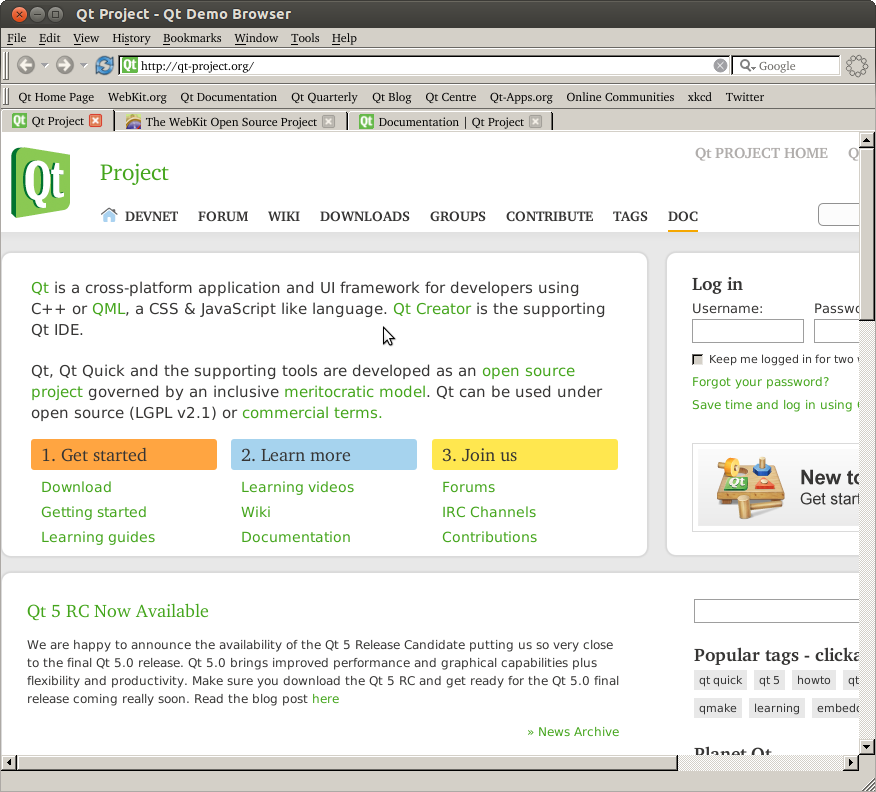

Tab Browser
The Tab Browser example shows Qt WebKit module in action, providing a little Web browser application with support for tabs.

This browser is the foundation for the Arora Browser, a simple cross-platform Web browser.
Files:
- webkitwidgets/browser/Info_mac.plist
- webkitwidgets/browser/addbookmarkdialog.ui
- webkitwidgets/browser/autosaver.cpp
- webkitwidgets/browser/autosaver.h
- webkitwidgets/browser/bookmarks.cpp
- webkitwidgets/browser/bookmarks.h
- webkitwidgets/browser/bookmarks.ui
- webkitwidgets/browser/browser.rc
- webkitwidgets/browser/browserapplication.cpp
- webkitwidgets/browser/browserapplication.h
- webkitwidgets/browser/browsermainwindow.cpp
- webkitwidgets/browser/browsermainwindow.h
- webkitwidgets/browser/chasewidget.cpp
- webkitwidgets/browser/chasewidget.h
- webkitwidgets/browser/cookiejar.cpp
- webkitwidgets/browser/cookiejar.h
- webkitwidgets/browser/cookies.ui
- webkitwidgets/browser/cookiesexceptions.ui
- webkitwidgets/browser/downloaditem.ui
- webkitwidgets/browser/downloadmanager.cpp
- webkitwidgets/browser/downloadmanager.h
- webkitwidgets/browser/downloads.ui
- webkitwidgets/browser/edittableview.cpp
- webkitwidgets/browser/edittableview.h
- webkitwidgets/browser/edittreeview.cpp
- webkitwidgets/browser/edittreeview.h
- webkitwidgets/browser/history.cpp
- webkitwidgets/browser/history.h
- webkitwidgets/browser/history.ui
- webkitwidgets/browser/modelmenu.cpp
- webkitwidgets/browser/modelmenu.h
- webkitwidgets/browser/networkaccessmanager.cpp
- webkitwidgets/browser/networkaccessmanager.h
- webkitwidgets/browser/passworddialog.ui
- webkitwidgets/browser/proxy.ui
- webkitwidgets/browser/searchlineedit.cpp
- webkitwidgets/browser/searchlineedit.h
- webkitwidgets/browser/settings.cpp
- webkitwidgets/browser/settings.h
- webkitwidgets/browser/settings.ui
- webkitwidgets/browser/squeezelabel.cpp
- webkitwidgets/browser/squeezelabel.h
- webkitwidgets/browser/tabwidget.cpp
- webkitwidgets/browser/tabwidget.h
- webkitwidgets/browser/toolbarsearch.cpp
- webkitwidgets/browser/toolbarsearch.h
- webkitwidgets/browser/urllineedit.cpp
- webkitwidgets/browser/urllineedit.h
- webkitwidgets/browser/webview.cpp
- webkitwidgets/browser/webview.h
- webkitwidgets/browser/xbel.cpp
- webkitwidgets/browser/xbel.h
- webkitwidgets/browser/data/browser.svg
- webkitwidgets/browser/data/defaultbookmarks.xbel
- webkitwidgets/browser/htmls/notfound.html
- webkitwidgets/browser/main.cpp
- webkitwidgets/browser/browser.pro
- webkitwidgets/browser/data/data.qrc
- webkitwidgets/browser/htmls/htmls.qrc